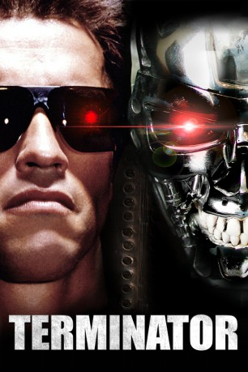

#431 Terminator 1
Alternativ: The Terminator
 
 IMDB-Wertung: 8.0 / 10
IMDB-Wertung: 8.0 / 10  IMDB-TOP-Platzierung: 226
IMDB-TOP-Platzierung: 226  Metascore: 84
Metascore: 84 
Ein Cyborg aus der Zukunft wird auf eine tödliche Mission in die heutige Gegenwart geschickt. Er soll Sarah Connor töten, eine junge Frau, die eine entscheidende Rolle für die Zukunft der Menschheit spielen wird. Sie hat nur eine Chance, Kyle Reese, ein Freiheitskämpfer, der ebenfalls aus der Zukunft kommt.
Jahr: 1984
Dauer: 107 Minuten
FSK: 16
Land: England Studio: Filmverlag der AutorenTonspuren: DTS - ,
Untertitel: Deutsch, Englisch,
Auflösung: 720p (1280x696) Größe: 8826 MB
Genre: Action, Sci-Fi
Regisseur:  James Cameron
James Cameron
Drehbuch: James Cameron, Gale Anne Hurd, William Wisher
Soundtrack: Brad Fiedel
Darsteller:
 Arnold Schwarzenegger als Terminator
Arnold Schwarzenegger als Terminator Michael Biehn als Kyle Reese
Michael Biehn als Kyle Reese Linda Hamilton als Sarah Connor
Linda Hamilton als Sarah Connor Paul Winfield als Lieutenant Ed Traxler
Paul Winfield als Lieutenant Ed Traxler Lance Henriksen als Detective Hal Vukovich
Lance Henriksen als Detective Hal Vukovich- Rick Rossovich als Matt Buchanan
- Bess Motta als Ginger Ventura
 Earl Boen als Dr. Peter Silberman
Earl Boen als Dr. Peter Silberman Dick Miller als Pawn Shop Clerk
Dick Miller als Pawn Shop Clerk- Franco Columbu als Future Terminator
 Bill Paxton als Punk Leader
Bill Paxton als Punk Leader- Brad Rearden als Punk
 Brian Thompson als Punk
Brian Thompson als Punk- Joe Farago als TV Anchorman
- Hugh Farrington als Customer
- Webster Williams als Reporter
- Greg Robbins als Motel Customer
 Marianne Muellerleile als Wrong Sarah
Marianne Muellerleile als Wrong Sarah- John Durban als Sentry
- J. Randolph Harrison als Policeman , uncredited
- Darrell Mapson als Bar Patron at Pay Phone with Sarah , uncredited
 John Stuart West als MacDougal , uncredited
John Stuart West als MacDougal , uncredited- Shawn Schepps als Nancy
- Bruce M. Kerner als Desk Sergeant
- William Wisher Jr. als Policeman
- Ken Fritz als Policeman
- Tom Oberhaus als Policeman
- Ed Dogans als Cop in Alley
- Hettie Lynne Hurtes als TV Anchorwoman
- Tony Mirelez als Station Attendant
- Philip Gordon als Mexican Boy
- Anthony Trujillo als Mexican Boy
- Stan Yale als Derelict
- Al Kahn als Customer
- Leslie Morris als Customer
- Harriet Medin als Customer
- Loree Frazier als Customer
- James Ralston als Customer
- Norman Friedman als Cleaning Man
- Barbara Powers als Ticket Taker
- Wayne Stone als Tanker Driver
- David Pierce als Tanker Partner
- John E. Bristol als Phone Booth Man
- Patrick Pinney als Bar Customer
- Bill W. Richmond als Bartender
- Chino 'Fats' Williams als Truck Driver
- David Kristin als Punk , uncredited
Datei: X:\5-Pentalogie(A-Z)\Terminator\Terminator 1 (1984, FSK16, 1280x696).mkv seit 21.02.2015
Festplatte: HD Collection-3(N-Z)-6(A-Z)
 Es gibt insgesamt 9 Filme in der Gruppe '5-Pentalogie(A-Z)\Terminator'
Es gibt insgesamt 9 Filme in der Gruppe '5-Pentalogie(A-Z)\Terminator'